CSS Introduction
What is CSS?
- CSS stands for Cascading Style Sheets.
- CSS describes how HTML elements are to be displayed on screen, paper, or in other media.
- CSS saves a lot of work. It can control the layout of multiple web pages all at once.
- External stylesheets are stored in CSS files.
Why Use CSS?
CSS is used to define styles for your web pages, including the design, layout and variations in display for different devices and screen sizes.
CSS Solved a Big Problem
HTML was NEVER intended to contain tags for formatting a web page!
HTML was created to describe the content of a web page, like :
<h1> This is a heading </h1>
<p> This is a paragraph. </p>
When tags like <font>, and color attributes were added to the HTML 3.2 specification, it started a nightmare for web developers. Development of large websites, where fonts and color information were added to every single page, became a long and expensive process.
To solve this problem, the World Wide Web Consortium (W3C) created CSS.
CSS removed the style formatting from the HTML page!
CSS Syntax
A CSS rule consists of a selector and a declaration block.
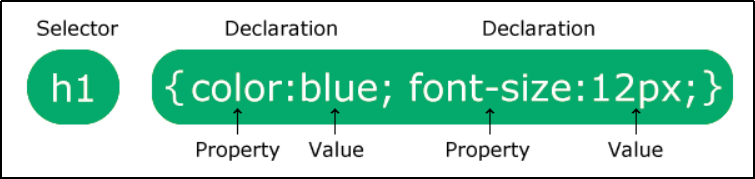
The selector points to the HTML element you want to style.
The declaration block contains one or more declarations separated by semicolons.
Each declaration includes a CSS property name and a value, separated by a colon.
Multiple CSS declarations are separated with semicolons, and declaration blocks are surrounded by curly braces.
Example :
In this example all <p> elements will be center-aligned, with a red text color :
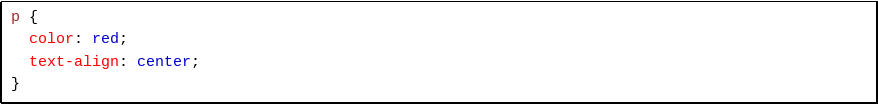
Example Explained
- p is a selector in CSS (it points to the HTML element you want to style : <p> ).
- color is a property, and red is the property value
- text-align is a property, and center is the property value
CSS How To
When a browser reads a style sheet, it will format the HTML document according to the information in the style sheet.
Three Ways to Insert CSS
There are three ways of inserting a style sheet :
- External CSS
- Internal CSS
- Inline CSS
External CSS
With an external style sheet, you can change the look of an entire website by changing just one file!
Each HTML page must include a reference to the external style sheet file inside the <link> element, inside the head section.
Example :
External styles are defined within the <link> element, inside the <head> section of an HTML page:
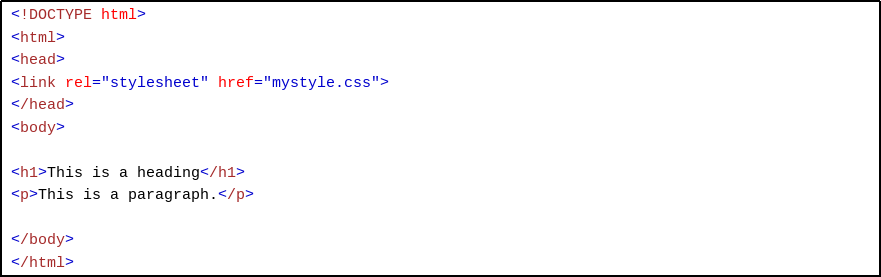
An external style sheet can be written in any text editor, and must be saved with a .css extension.
The external .css file should not contain any HTML tags.
Here is how the "mystyle.css" file looks :
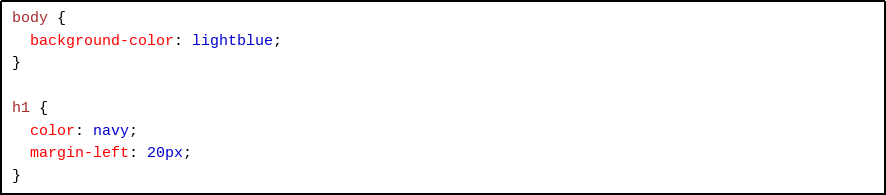
Internal CSS
An internal style sheet may be used if one single HTML page has a unique style.
The internal style is defined inside the <style> element, inside the head section.
Example :
Internal styles are defined within the <style> element, inside the <head> section of an HTML page :
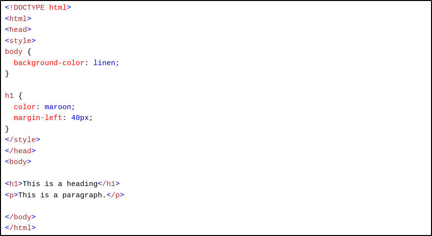
Inline CSS
An inline style may be used to apply a unique style for a single element.
To use inline styles, add the style attribute to the relevant element. The style attribute can contain any CSS property.
Example :
Inline styles are defined within the "style" attribute of the relevant element :
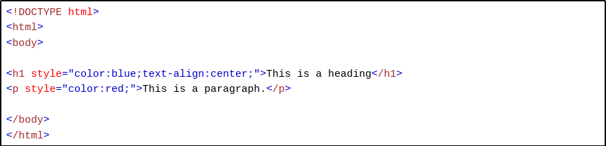
HTML Colors
Colors are specified using predefined color names, or RGB, HEX, HSL, RGBA, HSLA values.
Background Color
You can set the background color for HTML elements :
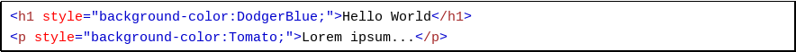
Text Color
You can set the color of text :
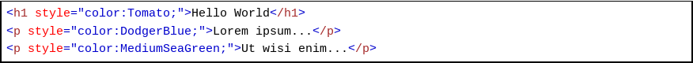
Border Color
You can set the color of borders :
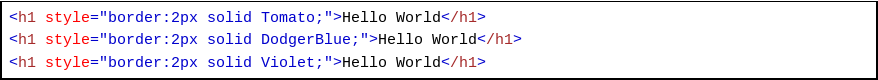
CSS Borders
The CSS border properties allow you to specify the style, width, and color of an element's border.
CSS Border Style
The border-style property specifies what kind of border to display.
The following values are allowed :
- dotted - Defines a dotted border
- dashed - Defines a dashed border
- solid - Defines a solid border
- double - Defines a double border
- groove - Defines a 3D grooved border. The effect depends on the border-color value
- ridge - Defines a 3D ridged border. The effect depends on the border-color value
- inset - Defines a 3D inset border. The effect depends on the border-color value
- outset - Defines a 3D outset border. The effect depends on the border-color value
- none - Defines no border
- hidden - Defines a hidden border
The border-style property can have from one to four values (for the top border, right border, bottom border, and the left border).
Example :
Demonstration of the different border styles :
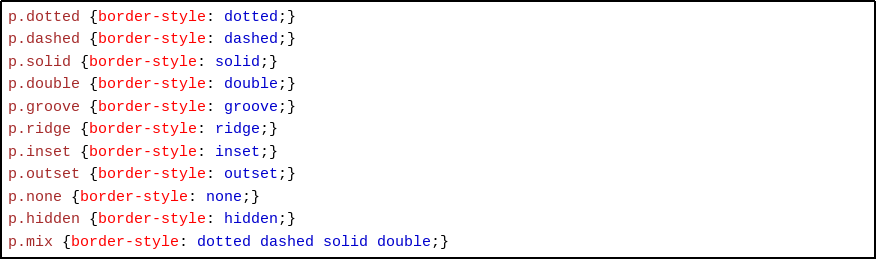
Result :
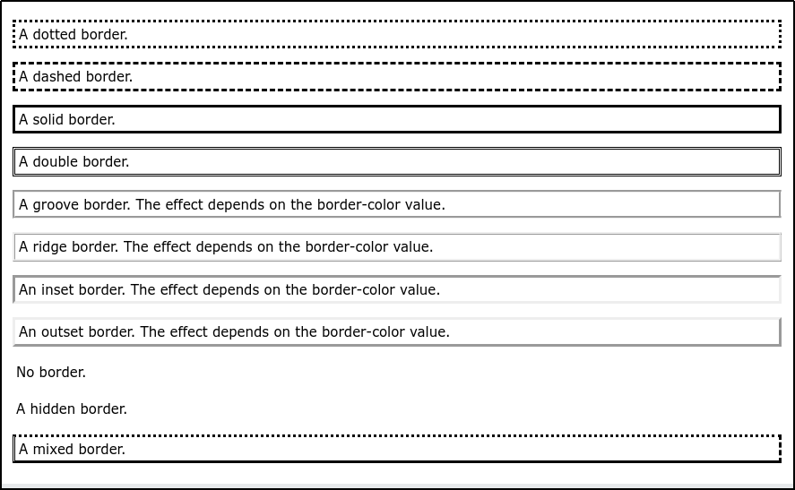
CSS Margins
Margins are used to create space around elements, outside of any defined borders.
CSS Margins
The CSS margin properties are used to create space around elements, outside of any defined borders.
With CSS, you have full control over the margins. There are properties for setting the margin for each side of an element (top, right, bottom, and left).
Margin - Individual Sides
CSS has properties for specifying the margin for each side of an element :
- margin-top
- margin-right
- marging-bottom
- margin-left
All the margin properties can have the following values :
- auto - the browser calculates the margin
- length - specifies a margin in px, pt, cm, etc.
- % - specifies a margin in % of the width of the containing element
- inherit - specifies that the margin should be inherited from the parent element
Tip : Negative values are allowed.
Example :
Set different margins for all four sides of a
element:
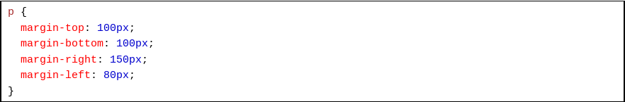
Margin - Shorthand Property
To shorten the code, it is possible to specify all the margin properties in one property.
The margin property is a shorthand property for the following individual margin properties :
- margin-top
- margin-right
- marging-bottom
- margin-left
CSS Outline
An outline is a line drawn outside the element's border.
CSS Outline
An outline is a line that is drawn around elements, OUTSIDE the borders, to make the element "stand out".
CSS has the following outline properties :
- outline-style
- outline-color
- outline-wdith
- outline-offset
- outline
CSS Text
CSS has a lot of properties for formatting text.
Text Color
The color property is used to set the color of the text. The color is specified by:
- a color name - like "red"
- a HEX value - like "#ff0000"
- an RGB value - like "rgb(255,0,0)"
The default text color for a page is defined in the body selector.
Example :
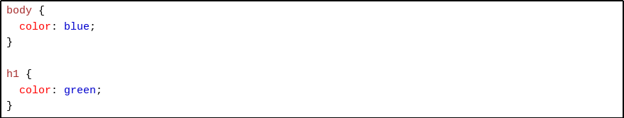
Text Color and Background Color
In this example, we define both the background-color property and the color property :
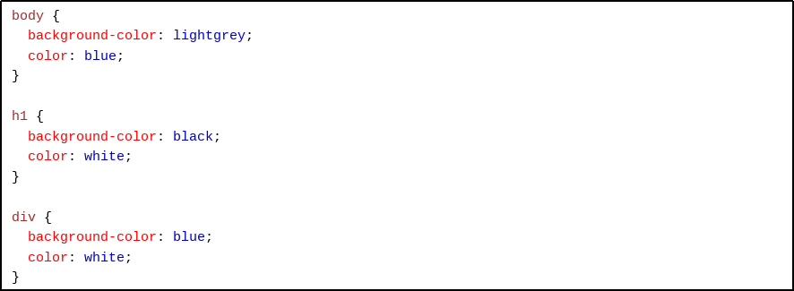
CSS Fonts
Choosing the right font for your website is important!
Font Selection is Important
Choosing the right font has a huge impact on how the readers experience a website.
The right font can create a strong identity for your brand.
Using a font that is easy to read is important. The font adds value to your text. It is also important to choose the correct color and text size for the font.
Generic Font Families
In CSS there are five generic font families :
- Serif fonts have a small stroke at the edges of each letter. They create a sense of formality and elegance.
- Sans-serif fonts have clean lines (no small strokes attached). They create a modern and minimalistic look.
- Monospace fonts - here all the letters have the same fixed width. They create a mechanical look.
- Cursive fonts imitate human handwriting.
- Fantasy fonts are decorative/playful fonts.
All the different font names belong to one of the generic font families.
CSS Tables
The look of an HTML table can be greatly improved with CSS :
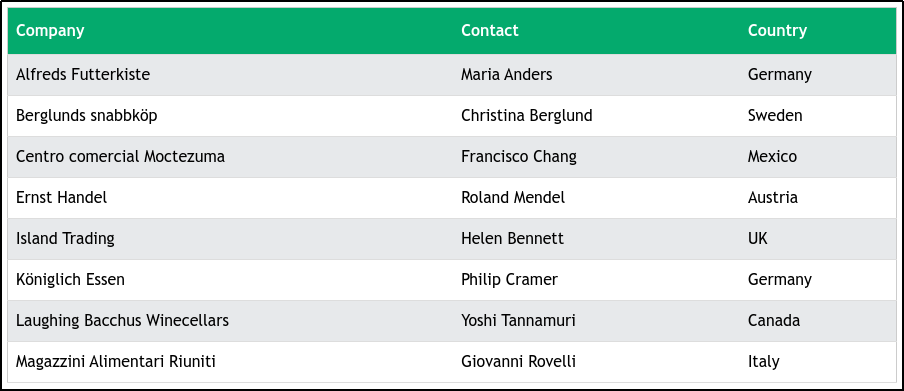
Table Borders
To specify table borders in CSS, use the border property.
The example below specifies a solid border for <table>, <th>, and <td> elements :
Example :
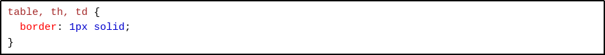